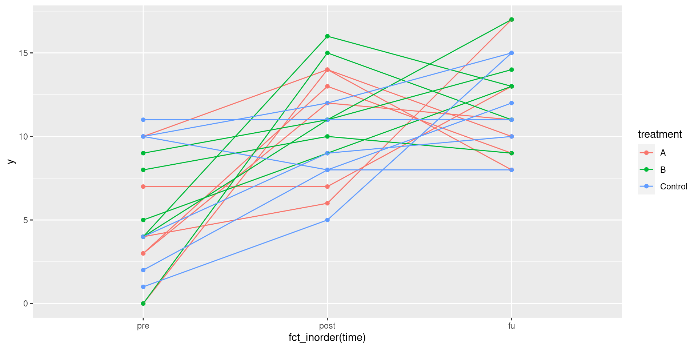

library(tidyverse)Tidying data: extras
Packages
The pig feed data again
my_url <- "http://ritsokiguess.site/STAC32/pigs1.txt"
pigs <- read_table(my_url)
pigsMake longer (as before)
pigs %>% pivot_longer(-pig, names_to="feed",
values_to="weight") -> pigs_longer
pigs_longerMake wider two ways 1/2
pivot_wider is inverse of pivot_longer:
pigs_longer %>%
pivot_wider(names_from=feed, values_from=weight)we are back where we started.
Make wider 2/2
Or
pigs_longer %>%
pivot_wider(names_from=pig, values_from=weight)Disease presence and absence at two locations
Frequencies of plants observed with and without disease at two locations:
Species Disease present Disease absent
Location X Location Y Location X Location Y
A 44 12 38 10
B 28 22 20 18This has two rows of headers, so I rewrote the data file:
Species present_x present_y absent_x absent_y
A 44 12 38 10
B 28 22 20 18Read into data frame called prevalence.
Lengthen and separate
prevalence %>%
pivot_longer(-Species, names_to = "column",
values_to = "freq") %>%
separate(column, into = c("disease", "location"))Making longer, the better way
prevalence %>%
pivot_longer(-Species, names_to=c("disease", "location"),
names_sep="_", values_to="frequency") %>%
arrange(Species, location, disease) -> prevalence_longer
prevalence_longerMaking wider, different ways
prevalence_longer %>%
pivot_wider(names_from=c(Species, location), values_from=frequency)prevalence_longer %>%
pivot_wider(names_from=location, values_from=frequency)Interlude
pigs_longerpigs_longer %>%
group_by(feed) %>%
summarize(weight_mean=mean(weight))What if summary is more than one number?
eg. quartiles:
pigs_longer %>%
group_by(feed) %>%
summarize(r=quantile(weight, c(0.25, 0.75)))this also works
pigs_longer %>%
group_by(feed) %>%
summarize(r=list(quantile(weight, c(0.25, 0.75)))) %>%
unnest(r)or, even better, use enframe:
quantile(pigs_longer$weight, c(0.25, 0.75)) 25% 75%
65.975 90.225 enframe(quantile(pigs_longer$weight, c(0.25, 0.75)))A nice look
Run this one line at a time to see how it works:
pigs_longer %>%
group_by(feed) %>%
summarize(r=list(enframe(quantile(weight, c(0.25, 0.75))))) %>%
unnest(r) %>%
pivot_wider(names_from=name, values_from=value) A hairy one
18 people receive one of three treatments. At 3 different times (pre, post, followup) two variables y and z are measured on each person:
Attempt 1
repmes %>% pivot_longer(contains("_"),
names_to=c("time", "var"),
names_sep="_"
)This is too long! We wanted a column called y and a column called z, but they have been pivoted-longer too.
Attempt 2
repmes %>% pivot_longer(contains("_"),
names_to=c("time", ".value"),
names_sep="_"
) -> repmes3
repmes3This has done what we wanted.
make a graph
ggplot(repmes3, aes(x=fct_inorder(time), y=y,
colour=treatment, group=id)) +
geom_point() + geom_line()
A so-called spaghetti plot. The three measurements for each person are joined by lines, and the lines are coloured by treatment.
or do the plot with means
repmes3 %>% group_by(treatment, ftime=fct_inorder(time)) %>%
summarize(mean_y=mean(y)) %>%
ggplot(aes(x=ftime, y=mean_y, colour=treatment,
group=treatment)) +
geom_point() + geom_line()
On average, the two real treatments go up and level off, but the control group is very different.